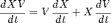
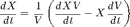
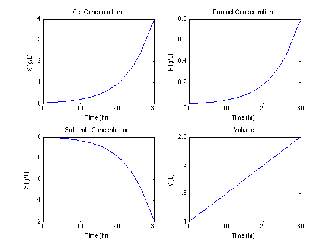

Fed-Batch Bioreactor
File: Ch02_Bioreactor_Fedbatch.m
The following example is a Matlab implementation of a model for a fed-batch bioreactor described in section 2.4.9 of SEMD. Use the Matlab 'publish' command to view the results. There are no software dependencies.
Contents
Version History
2012/02/02 JCK 2012/02/03 JCK Additional documentation, diagrams 2012/02/05 JCK Updated documentation, shortened display section 2012/04/06 JCK Added to the public directory.
Process Description
Operation of a fed-batch bioreactor begins with an initial batch of cells. A growth substrate is added to the reactor at a programmed rate F(t) over the period of operation. Substrate is consumed and a desired product produced during the course of normal cell growth and metabolism.
_____
Substrate ---- |Mixer|
F, Sf | \___/
___|__________|______________
| | |
| V: Volume | P: Product |
| S: Substrate | X: Cells |
| _ | _ |
| |_|-|_| |
|_____________________________|State Variables and Initial Conditions
Simulating systems of differential equations in Matlab requires all of the variables to be included in a single Matlab vector. The following table shows how the model variables are mapped to the Matlab vector x for simulation.
MATLAB SYMBOL DESCRIPTION IC UNITS x(1) X Cell Conc. 0.05 g/liter x(2) S Substrate Conc. 10.0 g/liter x(3) P Product Conc. 0.0 g/liter x(4) V Volume 1.0 liter
ic = [0.05; 10.0; 0.0; 1.0];
Parameter Values
Parameter values for the fed-batch bioreactor are from Table 2.3 of SEMD.
MATLAB PARAMETER DESCRIPTION VALUE UNITS
mumax mu_{max} Maximum Growth Rate 0.20 1/hour
Ks K_s Monod Constant 1.00 g/liter
Yxs Y_{X/S} Cell yield 0.5 g/g
Ypx Y_{P/X} Product yield 0.2 g/g
Sf S_f Feed Substrate Conc 10.0 g/litermumax = 0.20; Ks = 1.00; Yxs = 0.5; Ypx = 0.2; Sf = 10.0;
Reaction Rate Expressions
Rate equations for cell growth are implemented using anonymous functions. The following lines implement the rate models given by equations (2-93) through (2-95) in SEMD.
mu = @(S) mumax*S./(Ks + S); % Monod Equation (2-94) rg = @(X,S) mu(S)*X; % Rate of cell growth (2-93) rp = @(X,S) Ypx*rg(X,S); % Rate of product formation (2-95)
Inlet Flowrate
In this example the inlet flowrate is a constant function of time. In feedback control, the flowrate may also be a function of process state.
F = @(t) 0.05;
Reactor Model
The differential equations given in SEMD model the rate of change for total cell mass, product mass, substrate mass, and volume. These are implemented using anonymous functions.
dXV = @(t,x) x(4)*rg(x(1),x(2)); dPV = @(t,x) x(4)*rp(x(1),x(2)); dSV = @(t,x) F(t)*Sf - x(4)*rg(x(1),x(2))/Yxs; dV = @(t,x) F(t);
The model equations are for total the total mass of cells, product, and substrate. The state variables, however, are expressed in concentration, not total mass. Therefore we need to use the chain rule to reformulate the differential equations in terms of concentration. Applying the chain rule to total cell mass

then solving for rate of change of cell concentration gives

Applying the same process to all of the concentration variables and implementing in Matlab results in the following functions.
dX = @(t,x) (dXV(t,x) - x(1)*dV(t,x))/x(4); dS = @(t,x) (dSV(t,x) - x(2)*dV(t,x))/x(4); dP = @(t,x) (dPV(t,x) - x(3)*dV(t,x))/x(4);
The right hand sides of the differential equations are assembled into a corresponding function that produces a vector of function values.
f = @(t,x) [dX(t,x); dS(t,x); dP(t,x); dV(t,x)];
Integration
Use ode45 for the integration.
tspan = [0 30]; [t,x] = ode45(f,tspan,ic);
Display Results
The simulation results are displayed in a format similar to Figure 2.14 of SEMD.
subplot(2,2,1); plot(t,x(:,1)); xlabel('Time (hr)'); ylabel('X (g/L)'); title('Cell Concentration'); subplot(2,2,2); plot(t,x(:,3)); xlabel('Time (hr)'); ylabel('P (g/L)'); title('Product Concentration'); subplot(2,2,3); plot(t,x(:,2)); xlabel('Time (hr)'); ylabel('S (g/L)'); title('Substrate Concentration'); subplot(2,2,4); plot(t,x(:,4)); xlabel('Time (hr)'); ylabel('V (L)'); title('Volume');
Suggested Exercises
- Repeat the above calcuations to confirm the results in Section 2.4.9 SEMD for F(t) = 0.02.
- Problem 2.15 SEMD. Modify the model and simulation for the case of a continuous bioreactor. Use the Matlab command fsolve for the necessary equation solving for the steady state analysis in parts (b), (c), and (d). Use |ode45) to integrate the model differential equations to steady state to confirm the your calculations for part (d).
- Problem 2.17 SEMD. You can solve this problem by trial and error. Alternatively, you can create an anonymous function which, given a final time, performs the necessary simulation to compute fraction of substrate converted. Then use fsolve to find the time necessary to convert 90% of the the substrate. necessary simulation